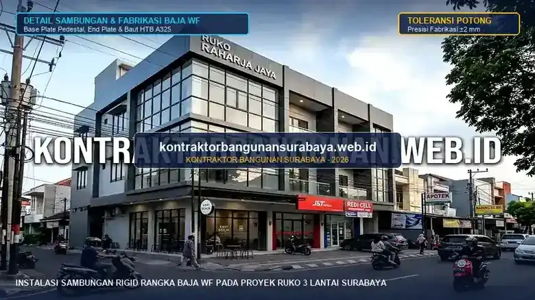

1. Bagaimana Cara Menghitung Kebutuhan Baja WF untuk Struktur Ruko Bertingkat?
Menghitung kebutuhan baja WF untuk struktur ruko bertingkat melibatkan penentuan bentang dan beban yang harus ditopang, pemilihan profil WF yang sesuai kapasitas tersebut, kemudian menghitung total berat baja berdasarkan panjang elemen dan berat per meter dari profil yang dipilih.
kontraktorbangunansurabaya.web.id membantu pemilik proyek memahami dasar perhitungan ini sebelum masuk ke tahap perhitungan struktur yang lebih detail oleh tenaga ahli, baik pada pelaksanaan proyek konstruksi gedung dan komersial maupun tahap pra-konstruksi desain arsitektur dan RAB di Surabaya.
Keunggulan Struktur Baja WF untuk Ruko Komersial
Penggunaan baja profil Wide Flange (WF) pada ruko bertingkat memungkinkan bentang bebas kolom yang luas untuk area showroom/toko, waktu konstruksi 40% lebih cepat dibanding beton bertulang konvensional, serta bobot struktur yang lebih ringan terhadap beban gempa.
2. Menentukan Bentang dan Beban Sebagai Dasar Pemilihan Profil WF
Langkah awal menentukan kebutuhan baja WF adalah mengetahui bentang bebas yang harus ditopang, misalnya jarak antar kolom pada area ruang pamer tanpa sekat, karena semakin panjang bentang, semakin besar pula profil WF yang dibutuhkan untuk menahan lenturan akibat beban di atasnya.
Beban yang diperhitungkan tidak hanya beban mati seperti berat struktur itu sendiri (balok WF, plat bondek, cor beton lantai, dan dinding partisi), tetapi juga beban hidup seperti aktivitas manusia dan barang di dalam ruko (stok dagangan retail atau gudang mini), serta beban tambahan seperti unit AC outdoor atau signage papan nama yang mungkin digantung pada struktur atap fasad ruko.
| Profil Baja WF (SNI) | Dimensi (H x B x t1 x t2) | Berat per Meter | Rekomendasi Fungsi Elemen Ruko |
|---|---|---|---|
| WF 150 × 75 | 150 × 75 × 5 × 7 mm | 14.00 kg/m' | Balok anak lantai & gording atap bentang 3 - 4 meter |
| WF 200 × 100 | 200 × 100 × 5.5 × 8 mm | 21.33 kg/m' | Balok induk ruko 2 lantai bentang 4 - 5 meter |
| WF 250 × 125 | 250 × 125 × 6 × 9 mm | 29.60 kg/m' | Kolom struktur utama ruko 2 lantai & balok bentang 6 m |
| WF 300 × 150 | 300 × 150 × 6.5 × 9 mm | 36.70 kg/m' | Kolom lantai 1 ruko 3 lantai & balok bentang bebas 6 - 8 m |
| WF 350 × 175 | 350 × 175 × 7 × 11 mm | 49.60 kg/m' | Balok transfer beban bentang bentang lebar >8 meter |
3. Menghitung Total Kebutuhan Material Berdasarkan Berat per Meter
Setiap profil baja WF memiliki spesifikasi berat per meter yang berbeda-beda tergantung dimensi dan ketebalannya, sehingga setelah profil yang sesuai ditentukan oleh perhitungan struktur, total kebutuhan material dihitung dengan mengalikan panjang total elemen baja dengan berat per meter profil tersebut.

Faktor susut dan sisa potongan pada proses fabrikasi juga perlu ditambahkan sebagai margin dalam perhitungan kebutuhan material, biasanya berkisar antara 3% hingga 5% dari total kebutuhan teoretis, agar tidak terjadi kekurangan material di tengah proses perakitan akibat panjang batang baja komersial di pasaran adalah 12 meter.
Selain berat material utama, kebutuhan pelat sambungan (base plate dan end plate) serta baut mutu tinggi (High Tensile Bolt A325 / F10T) untuk sambungan antar elemen baja juga perlu dihitung terpisah, karena komponen sambungan ini turut memengaruhi total biaya dan waktu pemasangan struktur baja secara keseluruhan.
Contoh Simulasi Balok Ruko
- Bentang Balok: 6 meter (kebutuhan 8 batang = 48 meter lari).
- Profil Terpilih: WF 250 × 125 (29.60 kg/m').
- Berat Teoretis: 48 m × 29.60 kg/m = 1.420,80 kg.
- Total + Waste 5%: 1.420,80 × 1.05 = 1.491,84 kg (1.49 Ton).
Kebutuhan Komponen Aksesoris
- Base Plate (Tumpuan): Plat baja tebal 16-20 mm + 4 titik angkur tanam M22.
- End Plate (Balok-Kolom): Plat tebal 12-16 mm + baut HTB A325 Grade 8.8.
- Proteksi Cat Anti Karat: 2 lapis Zinc Chromate Primer mencegah korosi cuaca tropis Surabaya.
4. Konsultasi Perhitungan Struktur Baja yang Akurat di kontraktorbangunansurabaya.web.id
Perhitungan manual sederhana seperti yang diuraikan di atas hanya memberikan gambaran kasar, sedangkan penentuan akhir profil dan jumlah baja yang digunakan tetap harus melalui perhitungan struktur oleh insinyur sipil bersertifikat, mengingat banyak variabel teknis lain seperti kombinasi beban gempa (SNI 1726), batas lendutan izin (L/360), dan faktor keamanan yang perlu diperhitungkan secara menyeluruh.
kontraktorbangunansurabaya.web.id bekerja sama dengan tenaga ahli struktur berpengalaman untuk memastikan perhitungan kebutuhan baja WF pada setiap proyek ruko bertingkat benar-benar sesuai standar, sehingga bangunan yang dihasilkan aman digunakan sekaligus efisien dari sisi penggunaan material.
Koordinasi dengan bengkel fabrikasi mengenai toleransi ukuran potongan juga penting diperhatikan, karena kesalahan ukuran pada tahap fabrikasi dapat menyebabkan elemen baja tidak pas saat dipasang di lokasi, sehingga membutuhkan penyesuaian tambahan yang memakan waktu dan biaya ekstra pada saat perakitan di lapangan.
Perhitungan kebutuhan baja ini akan lebih bermakna apabila dilihat sebagai bagian dari estimasi biaya keseluruhan. Simak kembali panduan mengenai estimasi biaya bangun ruko untuk gambaran anggaran ruko bertingkat secara menyeluruh.
Layanan Fabrikasi & Ereksi Baja Bergaransi
Kami menyediakan layanan terpadu mulai dari perhitungan analisa struktur SAP2000/ETABS, fabrikasi workshop bersertifikasi, hingga perakitan ereksi baja di lapangan dengan standar pengawasan mutu ketat di Surabaya Raya.
5. FAQ Seputar Perhitungan Baja WF Ruko Bertingkat
6. Konsultasi Gratis Sekarang
Ingin berdiskusi lebih lanjut mengenai kebutuhan konstruksi ruko atau perhitungan struktur baja WF di Surabaya? Hubungi tim kami melalui WhatsApp di 0889-8964-3555 untuk konsultasi awal tanpa biaya bersama kontraktorbangunansurabaya.web.id.
Konsultasi WhatsApp di 0889-8964-3555Tim Ahli Struktur Baja & Ruko Komersial Kontraktor Bangunan Surabaya
Divisi Perencanaan Struktur Baja WF, Analisa Beban Teknis Sipil, Fabrikasi Workshop, dan Konstruksi Ruko serta Bangunan Komersial Modern di Surabaya Raya.